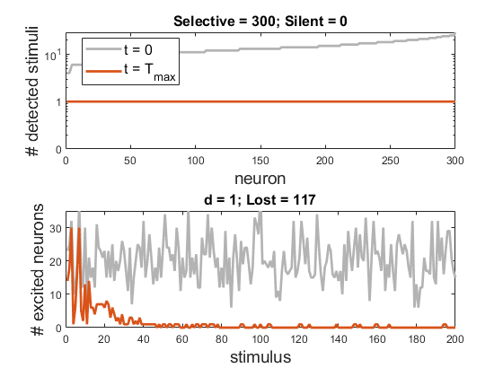

Script for testing the model with inhibitory couplings
Oct. 5, 2019, ver 0.31. Added new rule
Option D:
The results are very good. The rSelective ratio does not decrease significatively while rLost does.
rng(2) The number of lost stimuli reduces from 143 (d = 0) to 9 (d = 150).
Oct. 3, 2019, ver. 0.3. Added new rule
Option C:
The rults are ok.
rng(2) The number of lost stimuli reduces from 143 (d = 0) to 60 (d = 4).
Oct. 2, 2019. ver. 0.21. Correction of small mistakes in the final figure. Speed up Option B
Sept. 30, 2019. ver. 0.2. Implemented the following updating rules:
Option B:
The rults are even less satisfactory than with Option A The reduction is even smaller.
rng(2) The number of lost stimuli reduces from 143 (d = 0) to 122 (d = 1).
Sept. 27, 2019. ver. 0.1. Implemented the following updating rule:
Option A:
The results are not satisfactory. The number of neurons learning first stimuli reduces. However, the reduction is quite modest.
rng(2) The number of lost stimuli reduces from 143 (d = 0) to 117 (d = 1).
Contents
Set the problem parameters
clear path(path,'MatFunc') rng(2) % for reproducibility of the results psl = 0.95; % selective probability n = 30; % neuron dimension M = 300; % number of neurons L = 200; % number of stimuli Th = sqrt(3)*0.5; % threshold alpha = 20; Tmax = 400; % max integration time f = @(x) mod(round(x),L)+1; % function defining the stimulus sequence delta = sqrt(1 - (2*norminv(psl) / sqrt(5*n))); b2 = (Th/delta)^2; % beta^2 W0 = 2*rand(n,M) - 1; % random neurons s = sqrt(3/n)*(2*rand(n,L) - 1); % random stimuli [~,id] = sort(sum(s'*W0 > Th)); % sort neurons for convenience W0 = W0(:,id);
Do simulations with Option A
h = 0.01; % time step d = 1; % inhibitory coupling inh = @(y) d*(sum(y) - y); % Option A W = SimulateNeurons2(Tmax, h, W0, s, f, alpha, b2, Th, inh); clf PlotNetworkSelectivity(W0, W, s, Th, d)
************* rSelective = 100%; rLost = 58.5%
Do simulations with Option B
h = 0.01; % time step d = 1; % inhibitory coupling inh = @(y) d*(sum(y.^2) - sum(y)*y); % Option B W = SimulateNeurons2(Tmax, h, W0, s, f, alpha, b2, Th, inh); clf PlotNetworkSelectivity(W0, W, s, Th, d)
************* rSelective = 100%; rLost = 61%
Do simulations with Option C
h = 0.005; % time step (better to decrease) d = 4; % inhibitory coupling W = SimulateNeurons3(Tmax, h, W0, s, f, alpha, b2, Th, d); clf PlotNetworkSelectivity(W0, W, s, Th, d)
************* rSelective = 76.7%; rLost = 30%
Do simulations with Option D
h = 0.005; d = 150; % Option D W = SimulateNeurons4(Tmax, h, W0, s, f, alpha, b2, Th, d); clf PlotNetworkSelectivity(W0, W, s, Th, d) figure V = W'*s; F = V > Th; R = orderRasterPlot(F'); spy(R); title("Rasterplot neurons and stimuli they respond to"); xlabel("Neurons"); ylabel("Stimuli");
************* rSelective = 97.3%; rLost = 4.5%